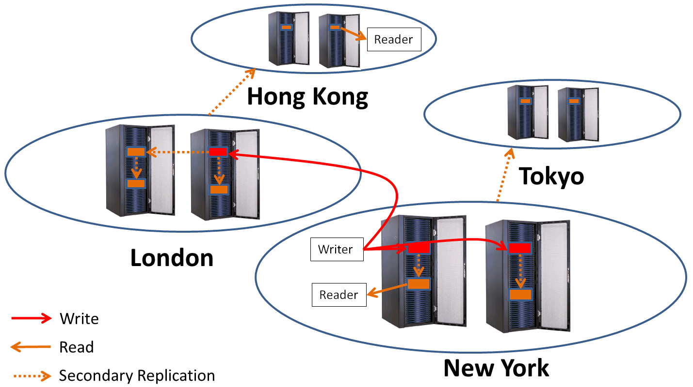

Scalable, high-throughput storage and coordination
SilverKing is a simple, scalable, high-throughput data storage and coordination mechanism designed for use in distributed applications. SilverKing provides both a distributed key-value store and a distributed file system.
SilverKing has several unique features that make it an attractive solution for many use-cases.
SilverKing provides a hash table-like interface that is accessible in a distributed environment. Values may be stored and retrieved from any server. Linda-like coordination primitives simplify distributed application development.
The SilverKing File System (SKFS) provides a highly-scalable file system by leveraging the SilverKing DHT. SKFS is the successor to the SRFS project.
|
SilverKing provides rich inter and intra-datacenter topology support as well as support for both primary and secondary replicas (writes are always reflected in primary replicas, and will eventually be reflected in secondary replicas.) For example, the figure on the right represents a case where the following storage policy is in place:
Region policy: Primary replicas in New York and London. Secondary in Tokyo and Hong Kong. |
 |
SilverKing is designed to support extremely demanding distributed storage and coordination. Many tens of thousands of clients may simultaneously utilize a common SilverKing instance. This allows SilverKing to support the most demanding "Big Data" applications in addition to less-demanding distributed applications.
Specifically, SilverKing provides scale and performance along many dimensions such as:
SilverKing supports live topology and configuration changes. For instance, it is possible to add or remove servers while SilverKing is running. It is also possible to change the replication level, the fraction of data stored on each server, the topology structure, etc. all without the need to restart SilverKing.
The same mechanisms that make it possible to support live topology changes, also enable SilverKing to function in the presence of failures (within the realm of what is feasible given the storage policy and level of failure.)
Quick Start describes how to quickly get up and running with a simple SilverKing instance.
SilverKing is capable of moving massive quantities of data very quickly. Doing this well requires a datacenter-optimized network. Standard TCP suffers from serious deficiencies that cause significant problems in typical distributed storage systems. This is a leading reason why many systems like Hadoop suffer from straggler tasks and attempt to work around the problem by issuing duplicate tasks. We have incorporated DCTCP into our datacenter, and extended it in order to provide SilverKing with robust, low-latency TCP performance. This eliminates long tails on jobs due to TCP-induced file system slowness.
See DCTCP+ for more details.
APIs are available for the following languages: Java, C++, Perl, and q.
See the Client Primer for a brief introduction to writing client applications.
Javadoc documentation is available for the Java API.
Simple examples using the Java API.
Full-Scale Admnistration documents administration of a full-scale SilverKing instance.
The SilverKing Client Shell provides a simple interactive interface that can also act as a command line utility.
Contact us for more information.